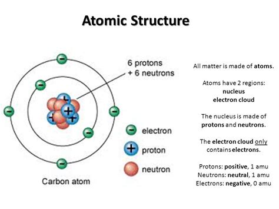
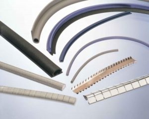
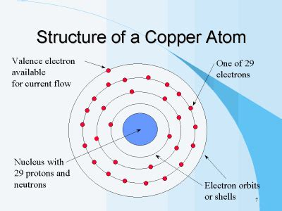
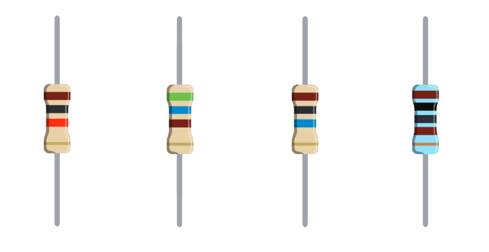

Electrical Circuits
With an Arduino you are creating an electrical circuit, the Arduino receives power, either from a battery or the USB connection, this is used to power the components on the circuit.
Electricity is the movement of electrons through a conductive material. In conductive materials, electrons can move easily between atoms, but in non-conductive materials they can't
Wires conduct the electricity to the components:
Electricity is the movement of electrons through a conductive material. In conductive material. In conductive materials, electrons can move easily between atoms, but in non-conductive materials they can't"

Atoms are made up of protons, neutrons and elections, with the protons and neutrons at the center and the electrons on the outside. Protons are positive, electrons negative and they are attracted to each other. If an electron can be freed from an atom and forced to move, electricity can be created.

In nonconductive materials such as rubber and glass, electrons are tightly bound to the atoms and cannot more easily.

In conductive ones, such as copper or aluminum they are not, the electrons on the outer edge, valance electrons can move easily between atoms. The electrons move along the different atoms producing a flow of electricity.
 Electrons are negatively charged and so actually move towards the positive, but when electricity was first discovered people thought they moved from positive to negative, so by convention electronic circuits tend to be drawn from positive to negative, and that's what I will be doing in this unit. The electricity we use in this unit will be flowing in one direction, a direct current (DC) not in both, an alternating current (AC).
To get electrons to start moving they need a push, and that push is the voltage. Electrons want to move from higher protentional energy to the lower potential energy (ground) of a circuit, the difference between higher and lower potential energy is voltage.
The electrical current, measured in amps, is the number of electrons per second that pass a certain point. In a circuit all the electricity must be used by the components on it. On an Arduino, the components you add will use some of the electricity and turn it into a different type of energy, light or sound for example.
Resistance is an important part of a circuit, it is measured in Ohms (add in symbol) and slows down the current, it's like an obstacle getting in the way of the current. .
Electrons are negatively charged and so actually move towards the positive, but when electricity was first discovered people thought they moved from positive to negative, so by convention electronic circuits tend to be drawn from positive to negative, and that's what I will be doing in this unit. The electricity we use in this unit will be flowing in one direction, a direct current (DC) not in both, an alternating current (AC).
To get electrons to start moving they need a push, and that push is the voltage. Electrons want to move from higher protentional energy to the lower potential energy (ground) of a circuit, the difference between higher and lower potential energy is voltage.
The electrical current, measured in amps, is the number of electrons per second that pass a certain point. In a circuit all the electricity must be used by the components on it. On an Arduino, the components you add will use some of the electricity and turn it into a different type of energy, light or sound for example.
Resistance is an important part of a circuit, it is measured in Ohms (add in symbol) and slows down the current, it's like an obstacle getting in the way of the current. .
Electrons are negatively charged and so actually move towards the positive, but when electricity was first discovered people thought they moved from positive to negative, so by convention electronic circuits tend to be drawn from positive to negative, and that's what I will be doing in this unit. The electricity we use in this unit will be flowing in one direction, a direct current (DC) not in both, an alternating current (AC).
To get electrons to start moving they need a push, and that push is the voltage. Electrons want to move from higher protentional energy to the lower potential energy (ground) of a circuit, the difference between higher and lower potential energy is voltage.
The electrical current, measured in amps, is the number of electrons per second that pass a certain point. In a circuit all the electricity must be used by the components on it. On an Arduino, the components you add will use some of the electricity and turn it into a different type of energy, light or sound for example.
Resistance is an important part of a circuit, it is measured in Ohms (add in symbol) and slows down the current, it's like an obstacle getting in the way of the current.
 Named after Georg Simon Ohm who discovered it, it's the mathematical relationship between voltage, current and resistance.
Voltage = amps x resistance or V = I * R where V is volts, I is current and R is resistance, this means that Amps = Voltage / Resistance and Resistance = Voltage divided by Amps. This image is taken from the Arduino projects book so you can refer back to it.
Named after Georg Simon Ohm who discovered it, it's the mathematical relationship between voltage, current and resistance.
Voltage = amps x resistance or V = I * R where V is volts, I is current and R is resistance, this means that Amps = Voltage / Resistance and Resistance = Voltage divided by Amps. This image is taken from the Arduino projects book so you can refer back to it.

Resistors are an important part of the circuit as they limit the current a component will get. Each component has a maximin amount of current it can receive, measured in amps, if it receives too much it won't know what to do with the energy which could cause it to pop or catch fire. A resistor is used to limit the amount of current a component receives.
resistance = voltage / current
resistance = 5 / 0.023 = 217 (ohms)
For example, if a component limit is 0.023 amps, and the circuit is receiving 5 volts you would add a 220 ohm resister to use the component safely resistance = voltage / current resistance = 5 / 0.023 = 217 (ohms)
Voltage Drop
When a component uses the current from the circuit it is called a voltage drop, it has taken some of the voltage from the circuit
 This example is in the Arduino project book on page 26. It doesn’t need any code and creates a circuit where you press a button to light the LED. Use a button to turn the light on. Set up the components and Arduino as shown in the diagram, once this is done connect the Arduino to a computer. Also have a look the parallel circuit which should be the next diagram in the book.
This example is in the Arduino project book on page 26. It doesn’t need any code and creates a circuit where you press a button to light the LED. Use a button to turn the light on. Set up the components and Arduino as shown in the diagram, once this is done connect the Arduino to a computer. Also have a look the parallel circuit which should be the next diagram in the book.